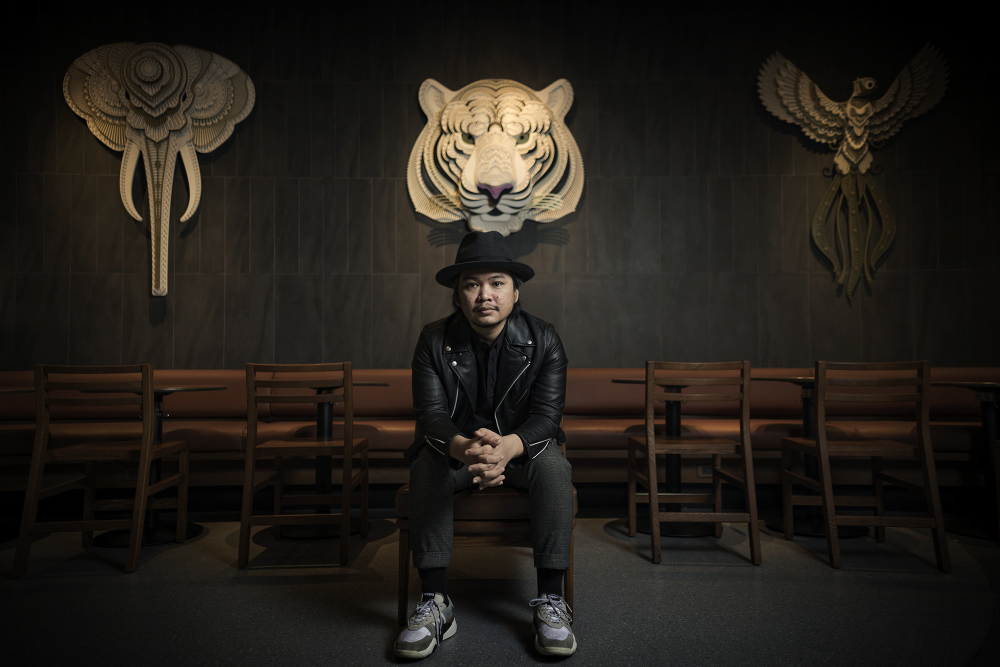
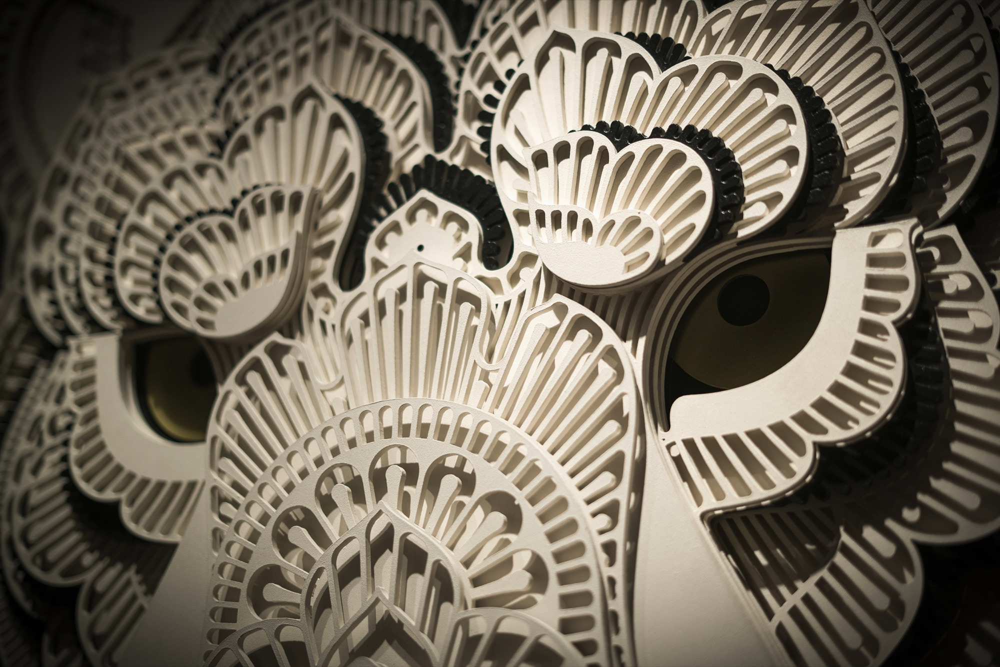

The artist · Philippines
A life in the details.
Patrick Cabral is a Filipino multidisciplinary artist exploring the connections between nature, cultural memory, and technology.

Sculpture · Lettering · Digital exploration
Many materials.
One curiosity.
Patrick’s work is recognised for its intricately layered surfaces. Animals, ornamental forms, and cultural symbols emerge from repeating lines and shapes, with each layer contributing to the depth of the whole.
His practice draws on experience in web development, animation, lettering, and design. That combination of disciplines continues to inform his approach: a sculpture can begin with a pattern, while a digital experiment can become a new way of thinking about a physical form.
Across hand-cut paper, sculptural commissions, and computational studies, the attention remains on how small decisions accumulate into something larger.
Explore the works
A detail of the Starbucks Reserve tiger.
Material & process
From a line
to a world.
Pattern gives the work its structure. Repetition creates rhythm; the space between layers creates shadow. A complete animal or figure can be read from a distance, then discovered again through its smallest details.
For Starbucks Reserve at SM North Towers, this visual language was translated into layered MDF. The elephant, tiger, and quetzal represent three coffee-growing regions in a collection designed for an architectural setting.
Discover the Starbucks collaborationNature & cultural memory
Looking closely.
Looking forward.
Wildlife has been a recurring subject, including paper portraits associated with conservation efforts. Filipino cultural imagery offers another rich vocabulary, from the star-shaped parol to the expressive masks of Dinagyang.
In Mananayaw ng Langit at Lupa, commissioned by the Iloilo Museum of Contemporary Art for Dinagyang, two masks bring contrasting qualities into dialogue: flight and earth, calm and energy.
The Lab follows the experimental side of the practice, including branching structures, sculptural vessels, and studies in colour and form.
Explore Langit at LupaContinue the conversation
An idea worth
making tangible.
For commissions, collaborations, exhibitions, and artwork inquiries.
Get in touch